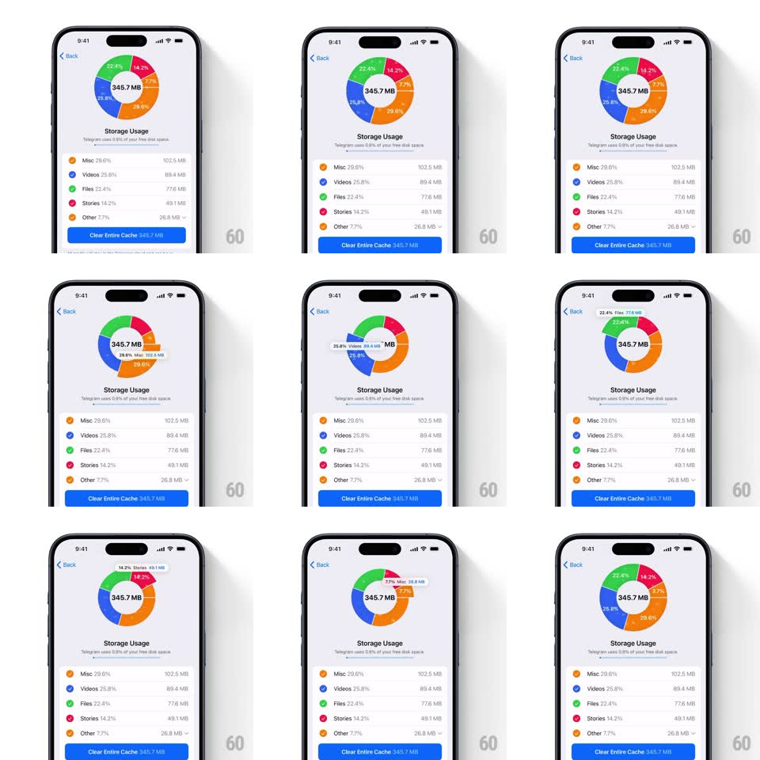

Media
Frame-by-frame

Rebuild this interaction 1:1: Telegram's storage pie chart - tapping a donut segment springs it outward from the ring and swaps the center label to that category's percentage and size; the legend rows below stay in sync.

Rebuild this interaction 1:1: Telegram's storage pie chart - tapping a donut segment springs it outward from the ring and swaps the center label to that category's percentage and size; the legend rows below stay in sync.
## Integration
Integration: stack-agnostic spec - springs given as stiffness/damping, timed motions as duration + curve; map every value to your framework and animation library of choice.
## Scene
The Storage Usage page: a donut chart (center label "345.7 MB" with per-segment percentage labels around the ring: Misc 29.6%, Videos 25.8%, Files 22.4%, Stories 14.2%, Other 7.7%), legend rows below (colored dot, category, share, bytes: Misc 102.5 MB, Videos 89.4 MB, Files 77.6 MB, Stories 49.1 MB, Other 26.8 MB), and the blue "Clear Entire Cache" button.
## Motion spec
Pattern: explodable donut selection.
- Tap a segment (or its legend row): the segment translates radially outward ~10pt (spring ~380/18, slight overshoot, 300ms) while its siblings stay put; its arc's percentage label brightens.
- The center label crossfades to the selection ("7.7% - Misc - 26.8 MB", 200ms), sized to fit.
- The matching legend row highlights (background tint fades in, 150ms).
- Tap the selected segment again (or elsewhere): it springs home (spring ~420/22) and the center label returns to the total.
- Selecting a different segment directly: the old one retracts as the new one pops out - one clock, no overlap snap.
## Calibration
- Only one segment exploded at a time; the ring never reorders.
- The outward offset is small - the segment must still read as part of the ring.
## Reduced motion
Selection highlights with color only; center label crossfades.
## Don't miss
- Segment percentage labels sit on the arcs themselves, rotating with the ring.
- The legend dot colors match segment fills exactly.